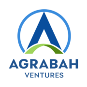

A Agrabah Marketplace for farmers and fisherfolk. PrivateE-commerceMetro Manila CompanyFounders2 ↗ agrabah.ph Agrabah is a Philippine online farm-to-market platform co-founded by Joselito Ocol Jr. and Josephine Gumino-Ocol. FoundersJOJoselito Ocol Jr. CEOJGJosephine Gumino-Ocol COO